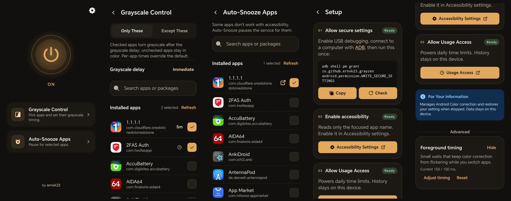

Per-app grayscale
Choose the apps that turn gray. Everything else stays colorful.
Per-app grayscale for Android.
Turns the screen gray for the apps you choose and brings color back when you leave them. No root, no tracking, no network.
Choose the apps that turn gray. Everything else stays colorful.
Pauses the service for apps that don't work with accessibility.
Use Android usage access to set daily time limits.
Sees only the focused app's package name. No screen content, no internet.

adb shell pm grant io.github.ernvk23.grayzen android.permission.WRITE_SECURE_SETTINGSTurn Grayzen off before uninstalling, or the screen may stay gray until you disable the service in Accessibility.